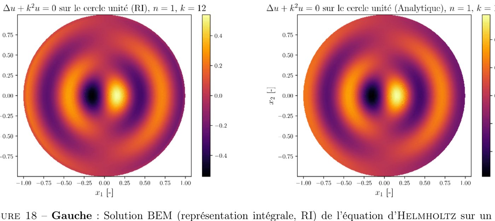
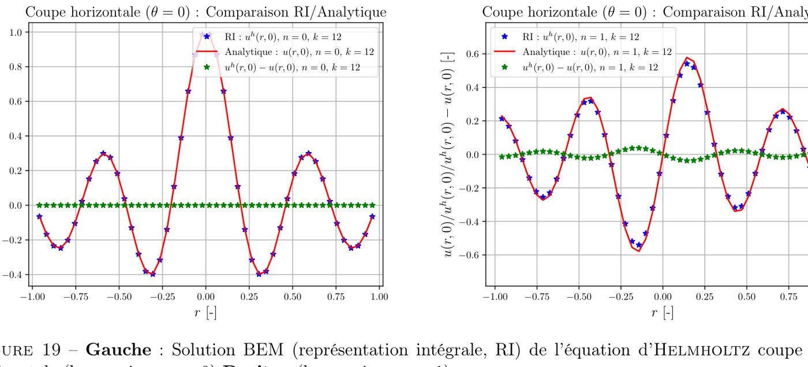
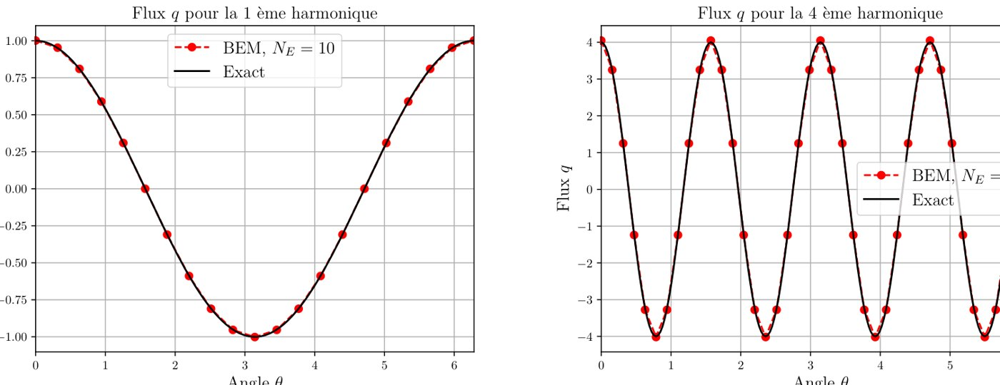
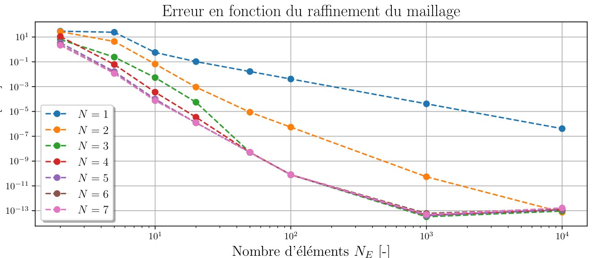
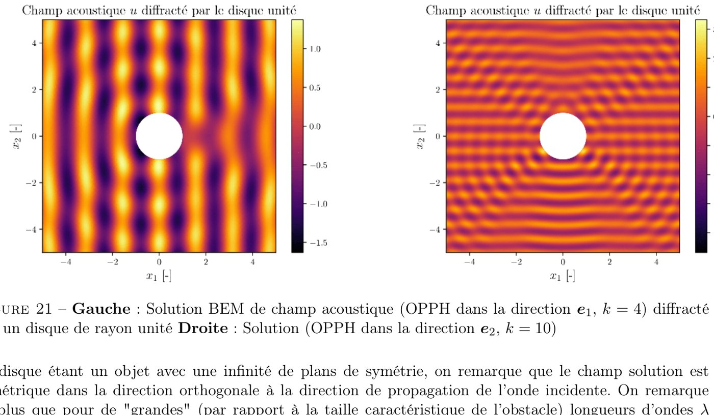

Research internship · Institut Jean le Rond d'Alembert, Sorbonne Université · 2023 (4 months) · supervisor R. Cornaggia
Boundary Elements for Acoustic Diffraction
Numerical tool from scratchValidated on exact solutionsPython

Summary
The boundary element method (BEM) solves wave problems by meshing only the boundary of an object instead of the whole space around it. Starting from a blank page, I implemented a 2D BEM in Python for time-harmonic acoustic waves (Laplace and Helmholtz equations) with quadratic elements, singular-integral quadrature and Gauss rules, then used it to compute how a plane wave is diffracted by a rigid circular obstacle.
The goal was a tool the team could trust: every step was checked on cases where the exact answer is known before moving on to diffraction.
On the bench
Even on a purely numerical project, I worked like on a test bench: reference cases first (harmonic solutions on the unit disc, compared point by point with the analytical solution), convergence measured as the mesh is refined, then comparison with Abaqus. The validation methodology and the documentation were written so that someone else could rerun every check.
Method & equations
Diffraction of an incident plane wave \(u_F=e^{ik\,\mathbf{d}\cdot\mathbf{x}}\) by a rigid obstacle: the scattered field \(v\) solves
$$(\Delta+k^2)\,v=0\ \text{ in }\Omega,\qquad \partial_n v=-\partial_n u_F\ \text{ on }\partial\Omega,\qquad \partial_r v-ikv=o(r^{-1/2})$$Green's identity turns the problem into an integral equation on the boundary only (\(G\): Green function, \(H=\partial_n G\)):
$$c(\mathbf{x})\,u(\mathbf{x})+\int_{\partial\Omega}H(\mathbf{x},\mathbf{y})\,u(\mathbf{y})\,dS_y=\int_{\partial\Omega}G(\mathbf{x},\mathbf{y})\,q(\mathbf{y})\,dS_y,\qquad G(\mathbf{x},\mathbf{y})=\tfrac{i}{4}H_0^{(1)}(k|\mathbf{x}-\mathbf{y}|)$$Collocation on \(N_E\) quadratic elements gives a dense linear system \((\tfrac12\mathbf{I}+\mathbf{A})\,\mathbf{v}=-\mathbf{B}\,\mathbf{q}_F\); the logarithmic singularity is integrated with a dedicated Gauss–log rule.
Figures









